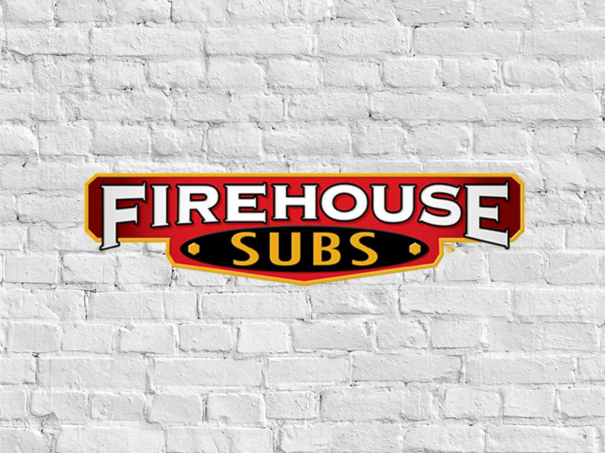
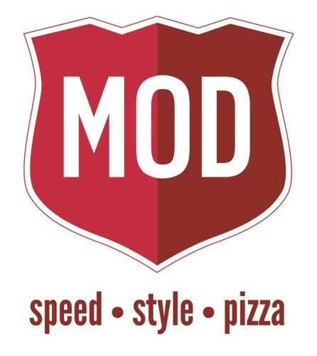
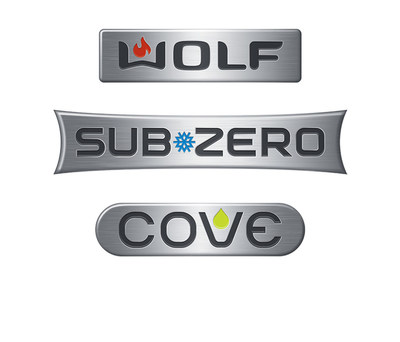
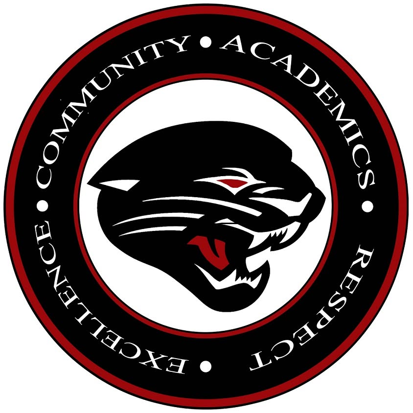
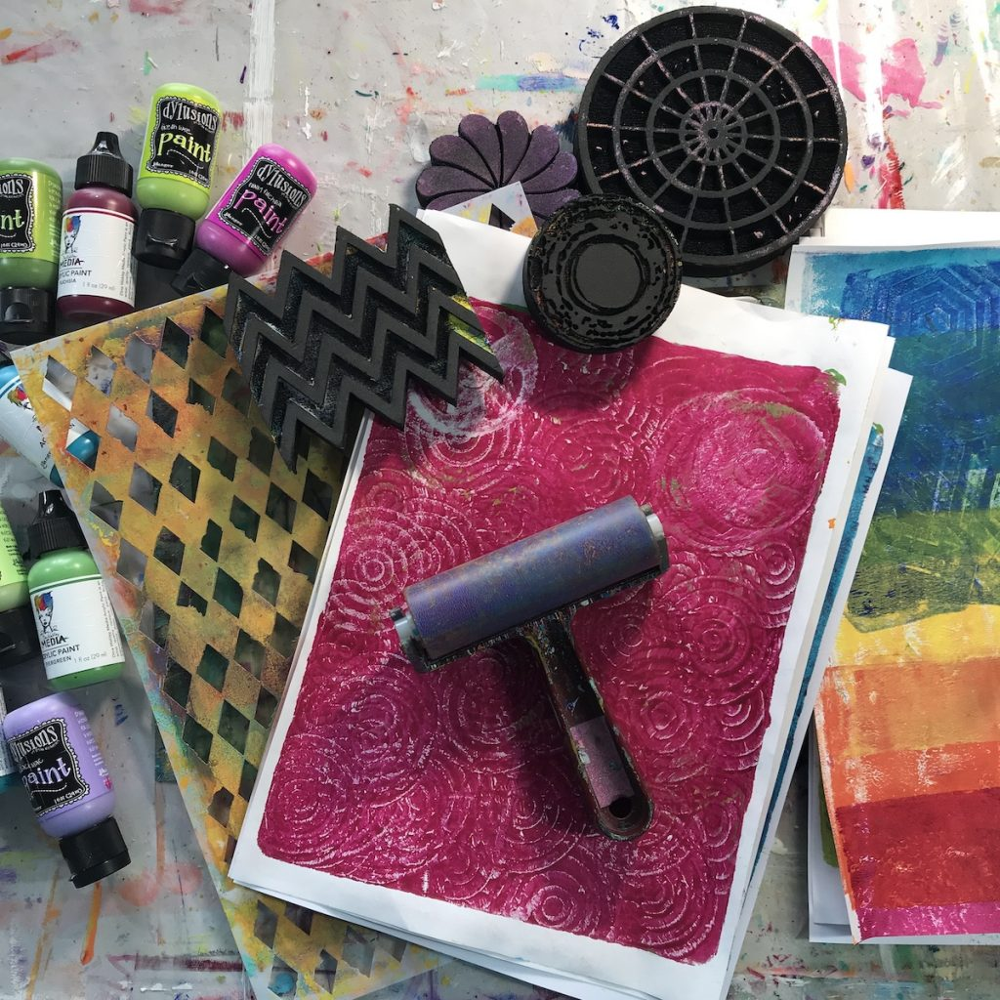

Work History
Majority of my experience in the work force derives from the food industry, where I have accumulated over ten years of grit and dedication. Some of those years account for leadership positions, as I was entrusted with maintaining stores, the employees, and other responsibilities like inventory and such. Aside from the food industry, I've done my share of warehouse jobs and learned to operate different machinery. However, now I'm looking for internships to further my experience and cultivate my tech skills.
Firehouse Subs

MOD Pizza

Amazon
FIGS
Subzero

Education
High School

Community College
University
Technical Skills
Adobe Photoshop

Adobe Illustrator

Mixed Media
